Importing Leaves
The Import Leaves tool in Settings lets administrators update employee leave records in bulk instead of one at a time. It has two modes, opened as tabs inside the same panel:
- Available Leaves — adds extra leave days on top of an employee's existing balance for a leave type (for example, topping up PTO, Comp off, or Sick balances)
- Consumed Leaves — bulk-records leave that employees have already taken, specifying the dates, number of days, and approver. This deducts the recorded days from the employee's existing balance.
Step 1: Open Settings
In the left-hand navigation, select Settings near the bottom of the menu.
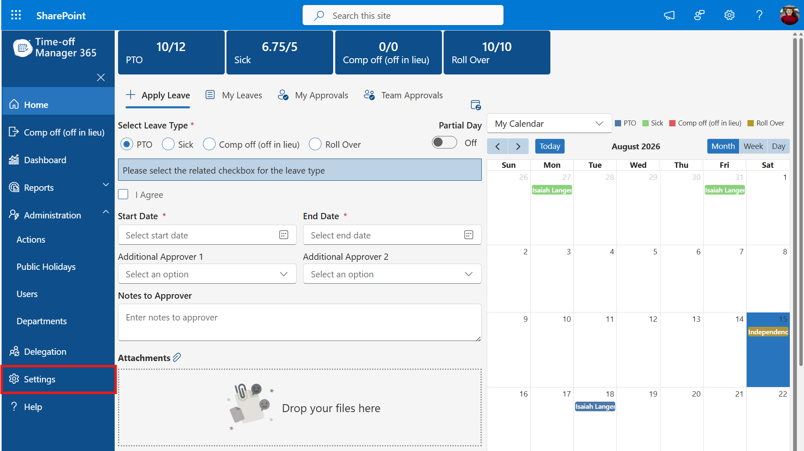
The Settings item in the left-hand navigation menu.
Step 2: Open Import Leaves
On the Settings page, scroll to the Migration section and click Import Leaves.
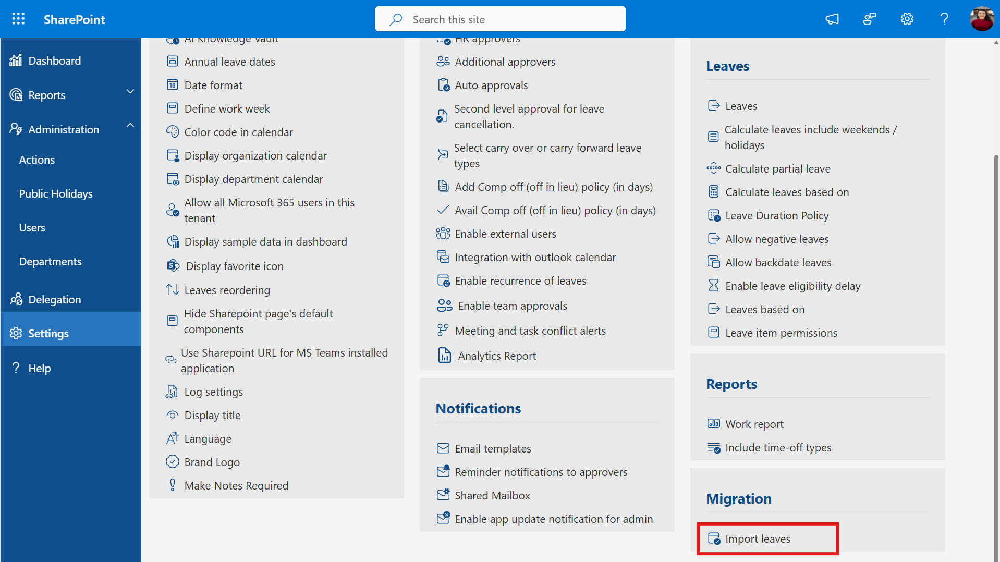
The Import Leaves option under the Migration section of Settings.
Adding Available Leave Balances
Use the Available Leaves tab to top up leave balances for one or more employees — for example, granting extra PTO or Sick days. The amounts you enter are added to whatever balance the employee already has; they do not replace it.
Step 3: Download the Available Leaves template
The Import Leaves panel opens with the Available Leaves tab selected by default. Click Download Sample File to get an Excel template listing all active users, with a column for each leave type (PTO, Comp off, Sick).
The Available Leaves tab, with the Download Sample File button highlighted.
Step 4: Enter the extra days to add
Open the downloaded file. Each row is one existing user, identified by Employee Email. In the columns for PTO, Comp off (off in lieu), and Sick, enter the number of extra days to add to that user's current balance. Leave a cell blank (or 0) for any leave type you don't want to change.
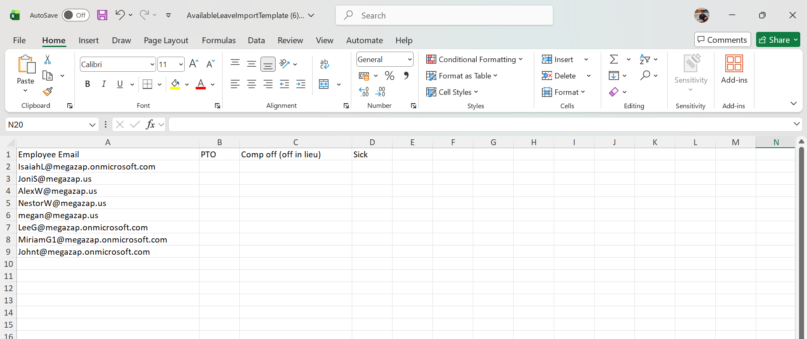
The Available Leaves template, with blank PTO, Comp off, and Sick columns for each user.
Fill in the amounts and save the file. In this example, 5 PTO days and 3 Sick days are being added to every listed user.
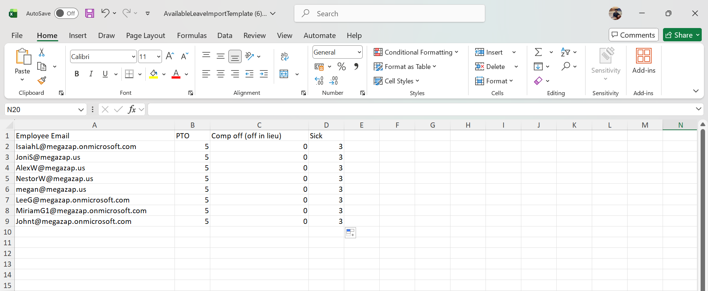
The Available Leaves template filled in with 5 PTO days and 3 Sick days to add for each user.
Step 5: Attach and upload the file
Back in the Available Leaves tab, click Upload Excel File (or drag and drop) and select your saved template. The file appears listed under Attachments.
The completed Available Leaves template attached in the Import Leaves panel.
Scroll down and click Upload to submit the file for processing.
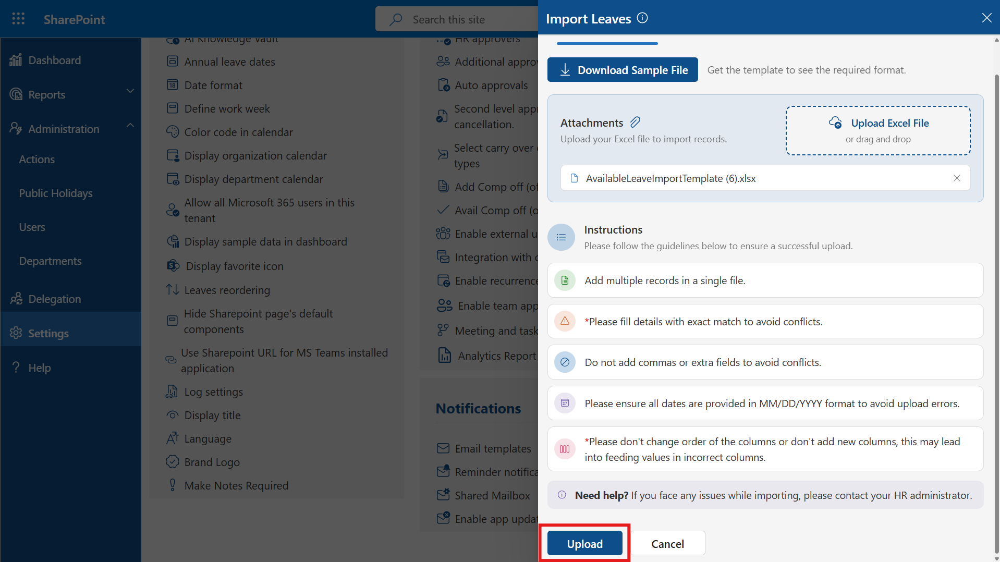
The Upload button at the bottom of the Available Leaves tab.
Step 6: Review the results
The panel displays a results table with a row for every user and leave type combination that was updated, along with how many days were added. Review this to confirm the balances were topped up as expected.
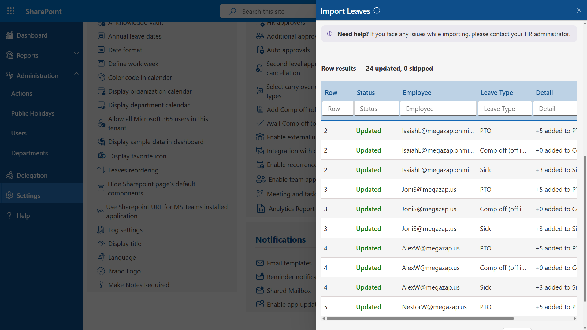
Row results after an Available Leaves import: 24 updated, 0 skipped, showing days added per leave type.
Recording Consumed Leaves
Use the Consumed Leaves tab to bulk-record leave that has already been taken. Unlike Available Leaves, this template captures full leave details — dates, number of days, status, reason, and approver — and the recorded days are deducted from the employee's existing balance.
Step 7: Switch to the Consumed Leaves tab
In the Import Leaves panel, click the Consumed Leaves tab.
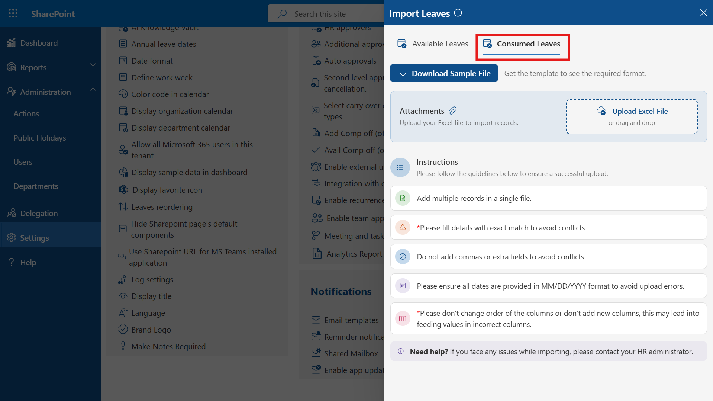
The Consumed Leaves tab in the Import Leaves panel.
Step 8: Download the Consumed Leaves template
With the Consumed Leaves tab active, click Download Sample File to get the template for recording taken leave.
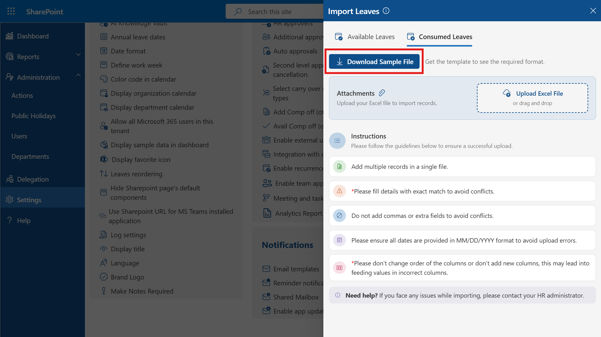
The Consumed Leaves tab, with the Download Sample File button highlighted.
Step 9: Enter the leave details
Open the downloaded file and add one row per leave record, filling in the Employee Email, Leave Type, Start Date and End Date (MM/DD/YYYY), Days, Status, Reason, and Approver Email. Save the file when finished.
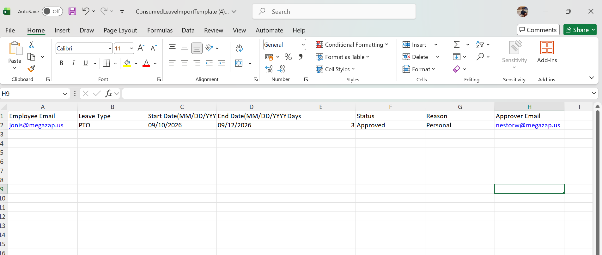
The Consumed Leaves template filled in with a PTO record: dates, days, status, reason, and approver.
Step 10: Attach and upload the file
Click Upload Excel File (or drag and drop) and select your saved Consumed Leaves template. The file appears listed under Attachments.
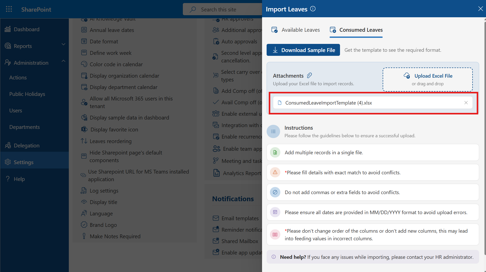
The completed Consumed Leaves template attached in the Import Leaves panel.
Scroll down and click Upload to submit the file for processing.
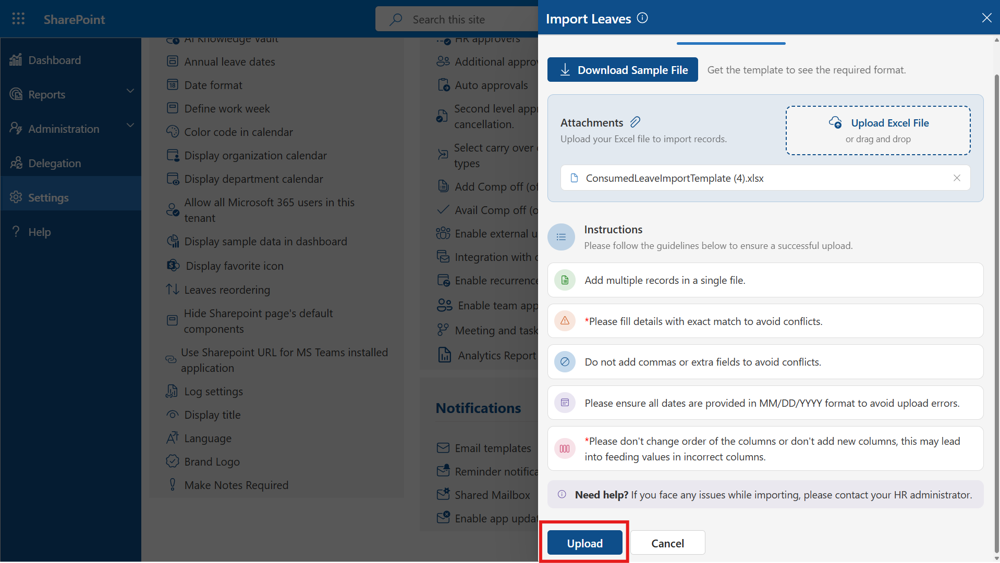
The Upload button at the bottom of the Consumed Leaves tab.
Step 11: Review the results
The panel displays a results table confirming each leave record that was processed and deducted from the employee's balance.
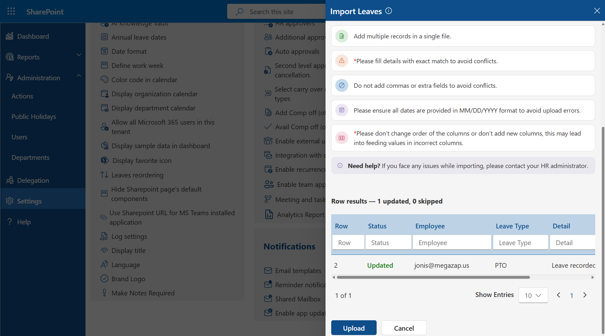
Row results after a Consumed Leaves import: 1 updated, 0 skipped, with the leave recorded against the employee